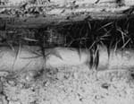
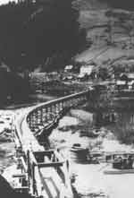

the VORTEX WORLD
self organizing fluid technique
|
| in the footsteps of Viktor Shauberger
|
| Here follows the introducting chapter of the report from the Malmögroup regarding our recent work with water purification. However, the rest of the report is still on Swedish but can be ordered from Curt Hallberg. Send me an e-mail. I owe my dear friend Linda Björck-Ewin a LOT for her kind work with the translation! Linda is a skilled translator (English-Swedish) and if You want her to do some translation work for You, please e-mail her ! |
| introduction The aim of this report is to try to understand and learn from the work and ideas of the Austrian Viktor Schauberger. As early as in the 1920s, Viktor Schauberger started warning of the environmental crisis that we are experiencing today. During his lifetime, he was met with resistance and his theories, which even nowadays may be considered to be unusual, were ridiculed. Since he was not educated in any established school or college of technology, but an autodidact, he did not use the "right" vocabulary to be able to communicate with the scientists who, perhaps, were best equipped to understand him. In this report, we will be trying to demonstrate how modern research into chaotic and self-organising systems may provide us with an opportunity to study Viktor Schauberger from a new perspective, and perhaps to establish a deeper understanding of the phenomena that he was describing. We have a number of people and organisations to thank for making this work possible. First and foremost, we owe Ingeströmska Stipendiefonderna a large debt of gratitude for the grant that made this project possible. The same goes for Christina Hallberg (Josefsson), who has been managing the project, and without whose knowledge we would not have come through some critical situations. We would also like to thank the Department of Limnology at Lund University for help with materials. Lastly, we would like to give our thanks to Organisationen för Ny Fysik (the Swedish Association for New Physics) and Nätverket för Gränsöverskridande Vetenskap (= the Network of Cross-disciplinary Sciences), who together have been acting as a link, enabling research of this kind to be carried out in Sweden. |
Malmö, November 1997 Lars Johansson, Curt Hallberg, Morten Ovesen |
| background We will use the terminology "self-organising flow" when describing our approach, since the technology described by Schauberger utilises the inherent order spontaneously created by a system when it is provided with the right conditions. It is probable that traces of the use of self-organising flow in different cultures may be seen, even going back very far in time. In western civilisation, it was probably the Minoan hydroculture in Crete that first utilised a technology based on this phenomenon. At the beginning of this century, Sir Arthur Evans discovered and restored the palace at Knossos on the Kefala hill in the middle of the island. The oldest parts date back to around 2100 - 2000 BC. Knossos had a water system that equalled those of modern times. Here, there were separate pipes for freshwater, grey- and blackwater. There was even a water closet with running water. Everywhere in the decoration of the walls it may be seen how the people living here were inspired by vortices of water. Whirls and spiralling patterns abound. Most interesting of all is, perhaps, how the problem of supplying freshwater was solved. From a spring on the other side of the valley, water was conveyed through a very special set of ceramic pipes. These pipes have a conical section lengthways, a small part of the narrow end of each pipe fitting into the next one. The narrowest part is placed forwards, in the direction of the flow, thus inducing an interesting torus-shaped flow structure inside the pipe. Thus, it was possible to convey water very far with only small losses due to friction. By using suitable siphoning devices, it was also possible to convey water up hills to supply users living higher up. In Knossos there were also special pools for the treatment of sewage water. The principle behind this was that the water should be returned to Nature in the same condition as it was in when it was "borrowed". This was especially important since water was considered to be holy, something which we should be able to learn from today. A similar point of view was put forward at the beginning of the 20th century by the Austrian Natural Scientist Viktor Schauberger [note 1] . Schauberger was a gamekeeper and did not originally possess any deeper knowledge of Physics. He had, however, a long tradition of Natural Science to fall back on. He also had plenty of opportunities to study the course of Nature at first hand in, for example, the cleaning or oxygenating of streams. It was his contention that man should study and learn from Nature instead of trying to correct it. Similarly, it was his view that, although we control the technology to utilise water, we know very little about water in Nature and the laws that govern its behaviour in a natural state untouched by man. Schauberger himself puts forward a good example of this: Study a salmon trout keeping still in a watercourse with a strong current without swimming against the current. The salmon trout only moves around slightly. Similarly, it moves directly against the current when it is frightened, not with the current, which seems to be logical. Studying the gills of the fish more closely, Schauberger discovered "guiding rails". These guide the incoming water backward in vortices. Schauberger was of the opinion that very small additions of trace metals, such as copper, function as a kind of catalyst in this process. When the rotating water comes into contact with the surrounding water a rise in pressure behind the fish occurs, thereby resulting in a fall in pressure in front of it (among other things, a jet of pulsating, torus-shaped vortices form, which may enable the fish to swim rapidly against the current [note 2]). At certain moments, a large kettle of boiling water was poured into the water a small distance in front of the fish. When the slightly heated water reached the fish, it could no longer stay in the same position. With this experiment, Schauberger demonstrated that temperature is of a great importance. Afterwards, he tried to replicate this effect mechanically, using a kind of turbine that he called a "trout turbine". Schauberger constructed a number of very special log flumes, the design of which went completely against the prevalent way of thinking. They did not run the shortest distance between two locations, but followed valleys and the meandering of brooks. Guiding rails were attached to the inside of these flumes, so that the water twisted in a lengthways spiral. This, together with careful control of the water temperature, resulted in Schauberger being able to float timber from "impossible" locations over long distances and of a quantity that far exceeded the capacity of the normal type. He could even float timber that was heavier than water. Timber that normally would sink in an ordinary log flume. Parts of these flumes still exist today and may be studied in various locations in Austria. the Stuttgart experiments The experiments that Viktor Schauberger carried out together with Professor Pöpel at the Institute of Technology in Stuttgart in 1952 [note 3] constitute the background to our work. One of the purposes of these experiments was to investigate whether it was possible to use different kinds of pipes containing rotating water in order to separate the aqueous phase of a fine suspension containing hydrophobic material. The basic idea was to use a vessel with a straight pipe connected to it underneath. As water is sluiced into it tangentially, there is further displacement of the water in a rotating movement downwards in the straight pipe. The flow organises itself into a vortex. Particles in the whirling flow gather in the centre of the vortex where the pressure is at its lowest. By using appropriately shaped pipes, Viktor Schauberger could then separate the hydrophobic material. The importance of the shape of the intake vessel was also investigated. By using one square and one round vessel, it was possible to study two extreme cases. Not only straight pipes, but also conical pipes and one spiral-shaped pipe were used. The one twisted into a spiral was shaped like the horn of the kudu antelope. Pipes of different materials, such as glass and copper, were also studied. The experiments were widened to include the investigation of the frictional resistance in pipes made from different materials. The results were, to some extent, astounding. Schauberger and Pöpel were able to determine that the more conical and spiralling the pipes became, the more the frictional resistance decreased. Pipes made from copper showed lower resistance than those made from glass. The copper pipe twisted into a spiral showed a fluctuating pattern when the flow was increased. At certain times, negative friction was noted; that is to say, the water seemed to leave the walls of the pipe and flow freely. It remains to be seen how this last result should be interpreted. Basically, it may be said that the technology involving self-organising flow used in the Stuttgart experiments is based on the water rotating around its own axis, while flowing in a spiralling course with a decreasing radius. The rotation speed increases towards the centre, where a sub-pressure forms. a new approach If a "bath tub vortex" is studied, the process may be more easily understood. If the flow is sufficiently slow, the water runs more or less straight down the drain. When the flow goes beyond a critical level there is a change, a bifurcation, and the water starts flowing in a vortex. In order to get the water to organise itself into this type of flow, it is necessary to provide the right conditions by shaping the geometry or, for example, by introducing different types of guiding rails or pumps, and by taking into account the interaction with the surrounding system - among other things, Schauberger stresses the importance of the vegetation to the temperature of a freely flowing stream. The system is in a state of dynamic stability where there is constant change, but where the structure still remains stable. This is an approach that has a very close affinity with Viktor Schauberger's way of thinking. Early on, Schauberger noticed that natural, untouched streams have such a structural stability. With these observations as a starting-point, he suggested methods for regulating rivers. These methods are based on the principle of stimulating the water towards self-organisation. By using appropriately chosen guiding devices and vegetation that regulates temperature, he was able to get streams to organise themselves into stable riverbeds. This method of regulating rivers and streams differs from the usual one, according to which an attempt is made to control the water, while the "ecosystem" that is formed by the flowing water and its interaction with the riverbed and the vegetation is ignored - with floods and the erosion of river banks as a natural result. As an example, Schauberger mentions the supporting capacity of the flow, which influences the structure of riverbanks and sandbanks, which in its turn has an influence on vegetation, which again in its turn has an influence in shaping the water's flow by, for example, cooling it down. The systems are interlocked, each gripping the other by the tail, as it were. Problems arise when one tries to interpret the language used by Schauberger, as he expressed himself philosophically concerning Nature rather than scientifically. It becomes difficult to develop a suitable theoretical model that works when it comes to optimising the use of and calculating the dimensions of vessels and pumps, for example. If one studies the freely flowing surface of the water in a rapid, or the trumpet-shaped borderline surface at the centre of a vortex, it becomes clear why a traditional approach becomes very difficult when the system is heavily non-linear. Schauberger was more interested in the system as a whole than in the details of its structure, focusing on the shape of the flow in the system without knowing about the underlying mechanisms. Thus, such an approach does not try to achieve as detailed a model as possible, but is aiming for the simplest model that has the same fundamental characteristics as the system. This is an approach that is closely related to that of modern chaos research. Here, it has been demonstrated that different and seemingly very complex behaviour often may be represented by (ridiculously) simple models. This is due to the fact that dynamic behaviour, for example at transitions from one phase to another, is universal, and is found in widely differing systems {Gleick, Waldrop}. The most important applications discussed by Schauberger are, naturally, the cleaning of water and the restoration of streams. These are applications that we will be investigating more closely in this report. aims and limits Thus, the aims of this report are: To repeat and verify the parts of the Stuttgart experiments that pertain to the generation and separation of vortices; To try to develop usable models that are able to link Viktor Schauberger's approach to modern concepts within Natural Science; To investigate how this technology may be used in order to: Clean drinking water Clean water from industrial processes Clean sewage water Restore streams |
| "As early as in the 1920s, Viktor Schauberger started warning of the environmental crisis that we are experiencing today." |
| "Schauberger was a gamekeeper and did not originally possess any deeper knowledge of Physics. He had, however, a long tradition of Natural Science to fall back on. He also had plenty of opportunities to study the course of Nature at first hand in, for example, the cleaning or oxygenating of streams. It was his contention that man should study and learn from Nature instead of trying to correct it." |
 |
| A few conical water pipes from Knossos. The picture was taken in the western part of the palace, close to the large grain silos. |
 |
| One of Schauberger's log flumes. Note the egg-shaped section and how the flume meanders like a brook (Neuberg, the 1930s). |
|
|
Note 2: Hans J. Lugt, Vortex Flow in Nature and Technology. John Wiley & Sons, N.Y. 1983
Note 3: Franz Pöpel, A preliminary report on experiments with spiral tubes with different forms. Firstly published as: Wendelrorhen mit verschniedener Wandform. Internal report, Institute of Health Technology, Technical University, Stuttgart 1952.